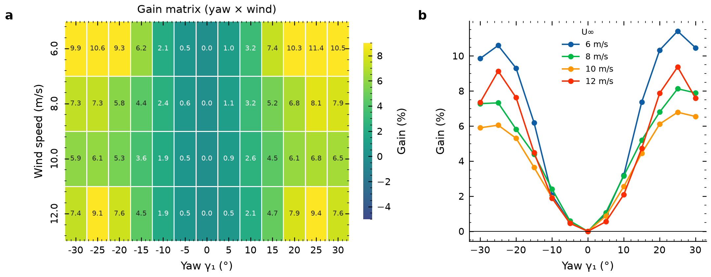
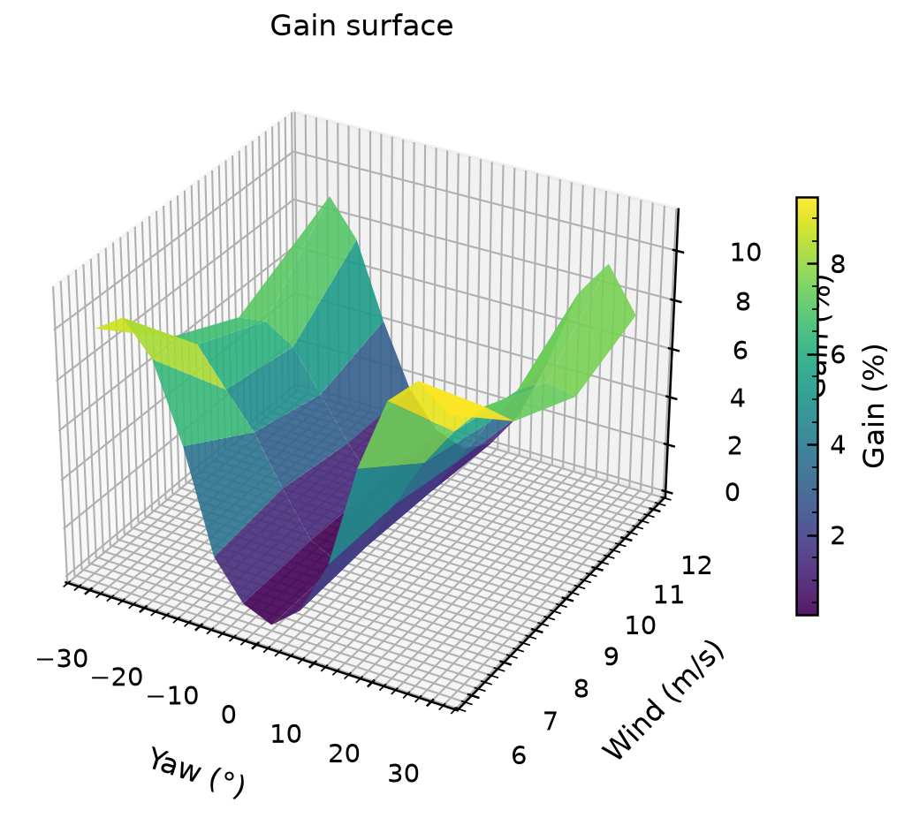

FIG. A偏航角 × 风速功率增益热力图（全网格）
悬停查看具体增益值。颜色越深增益越大，最优点在 +25° / 8 m/s 附近。
FIG. B定风速切片：增益 vs 偏航角
选择风速
选定风速下的增益曲线（%），最优点用虚线标记。
FIG. C定偏航切片：增益 vs 风速
选择偏航角
选定偏航角下增益随风速变化（%），展示不同风速区间的优化效果。
FIG. D三维增益曲面
偏航角 × 风速 → 增益(%)，拖拽旋转查看峰值位置
曲面高度=增益百分比。峰脊沿 ±25°~30° 偏航角分布，0° 处为基准低谷。
NATURE FIG · 01多风速增益热力矩阵 — viridis感知均匀

Gain矩阵 yaw×U，热力viridis + 定风速切片折线，单栏3.5in/双栏7.2in，感知均匀色盲安全 → PDF
NATURE FIG · 023D增益曲面 — gain = f(yaw,U)

3D曲面展示最优随风速上移，Nature单栏